Segunda etapa - Desenvolvimento
Início do Desenvolvimento
Para começar a implementação do sistema, primeiro criei o arquivo database para a manipulação dos dados.
Neste projeto não utilizei nenhum sistema de banco de dados. Os dados de cada serviço criado são salvos em arquivos de texto separados no formato JSON. Como mostra a imagem a seguir.
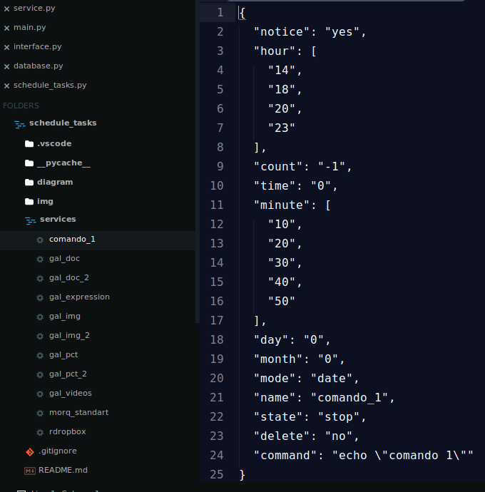A figura abaixo mostra as funções que criei para realizar a persistência dos dados dos serviços em disco. Basicamente, o que temos são duas funções que retornam dados, uma que exclui, e outra para salvá-los.
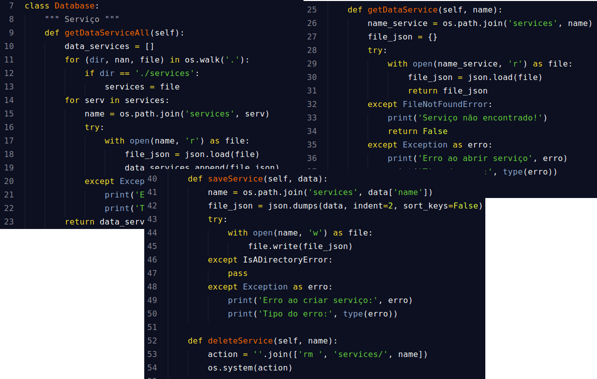A próxima figura mostra o código que realiza a persistência e a busca dos dados das configurações principais.
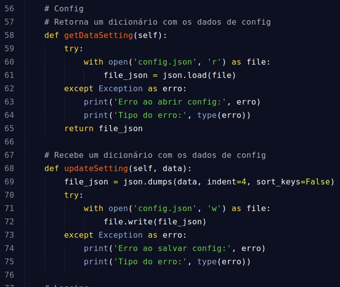A imagem abaixo mostra uma função que é utilizada para armazenar os dados de registro do programa para checagem de serviços.
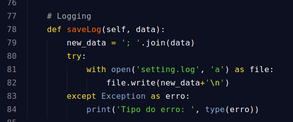Após criar o "banco de dados", o próximo passo foi desenvolver a interface para o gerenciamento dos dados dos serviços.
Abaixo é possível ver o menu principal, com as opções básicas que o programa oferece.
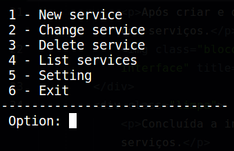Os parâmetros para se criar um novo serviço são mostrados na figura abaixo. Neste exemplo está sendo criado um serviço que rodará todos os 10 minutos, às 14 horas, de todos os dias e todos os meses de forma infinita determinado pelo parâmetro -1 definida na entrada "Repeat".
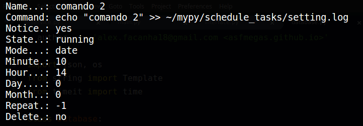- Primeiro definimos o nome do serviço;
- Depois, o comando que será executado pelo programa;
- Em seguida vem a notificação de quando o comando for executado;
- A entrada "State" determina o estado do serviço, podendo está "running", "stop" ou "wait";
- O modo que o serviço será executado, pode ser definido para se repetir uma quantidade de vez e parar, ou por data;
- Os parâmetros do modo "repeat" são o tempo e quantidade de vezes que o serviço deve se repetir a cada intervalo de tempo definido;
- Os parâmetros do modo "date" são o minuto, a hora, o dia, o mês e a quantidade de vezes que deve ser executada;
- O parâmetro "Delete" determina a exclusão do serviço após cumprido sua execução.
Abaixo é mostrado uma lista com todos serviços criados em ordem alfabética.
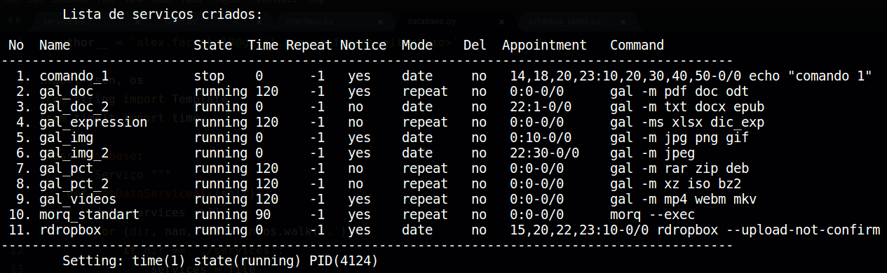As duas figuras abaixo mostram a alteração de um serviço.
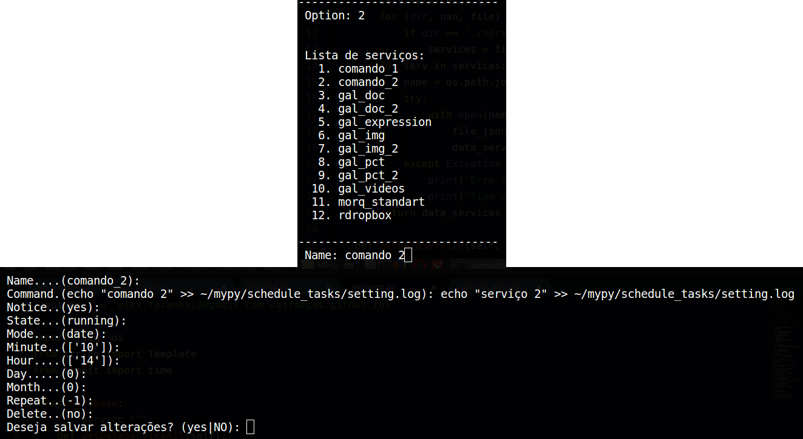 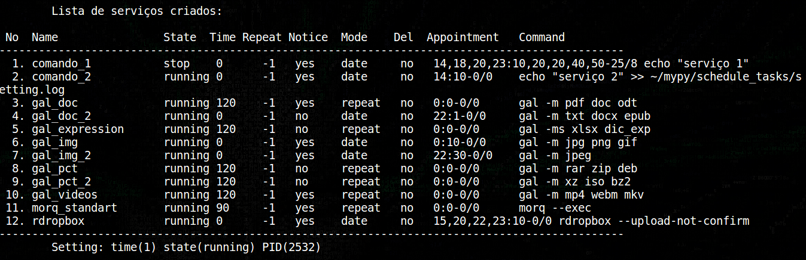Agora temos a exclusão de um serviço, que pode ser visto na imgem abaixo.
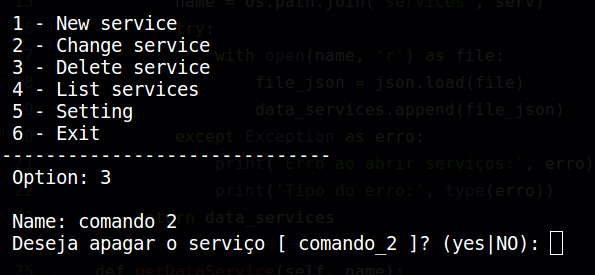Na última imagem desta seção, temos as configurações principais, que basicamente são o tempo do ciclo da função "main" e seu estado.
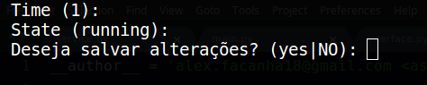Concluída a interface, o próximo passo é criar a função "main", que ficará responsável por iniciar os serviços e será o coração do programa.
Minha intenção nã é detalhar o código, apenas descrever pontos principais. Dito isso, logo abaixo vemos o inicio da função "mian", ela cria uma instância do database e obtêm seu PID para registro. Também é possível ver que ela cria uma lista com os dados da data a qual ela iniciou sua execução.
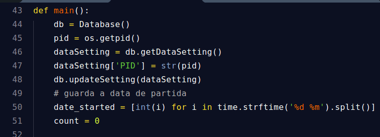A função "main" acessa os dados dos serviços e verifica seu estado. Se estive em estado de "stop" o serviço é armazenado na lista de serviços parados e não é executado. Caso esteja no estado "runinng" ele é armazenado na lista de serviços ativos e é executado.
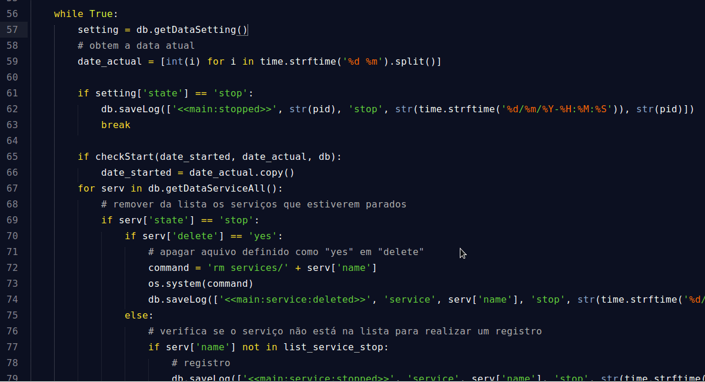Na imagem abaido, na linha 106 é mostrada a linha que cria os serviços em threads. Responsável pela independência de cada serviço.
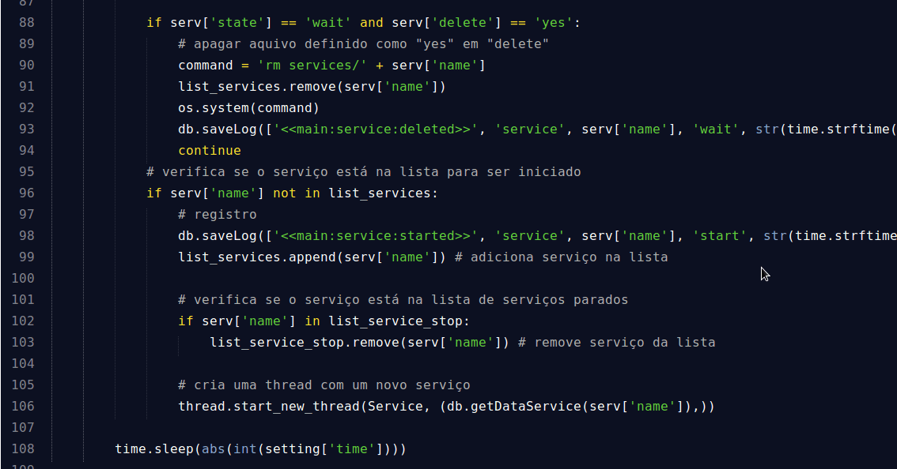Com "main" já rodando. Chega a hora de implementar o serviço.
Como os serviços são independentes, cada qual é responsável por verificar seus dados. Assim, cada serviço fica responsável por gerir seus dados e verificar se há alguma alteração nos mesmos.
 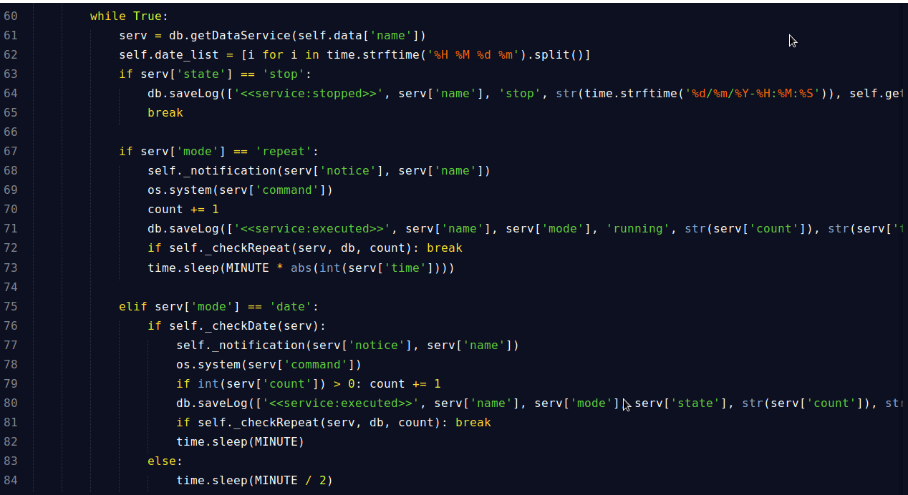
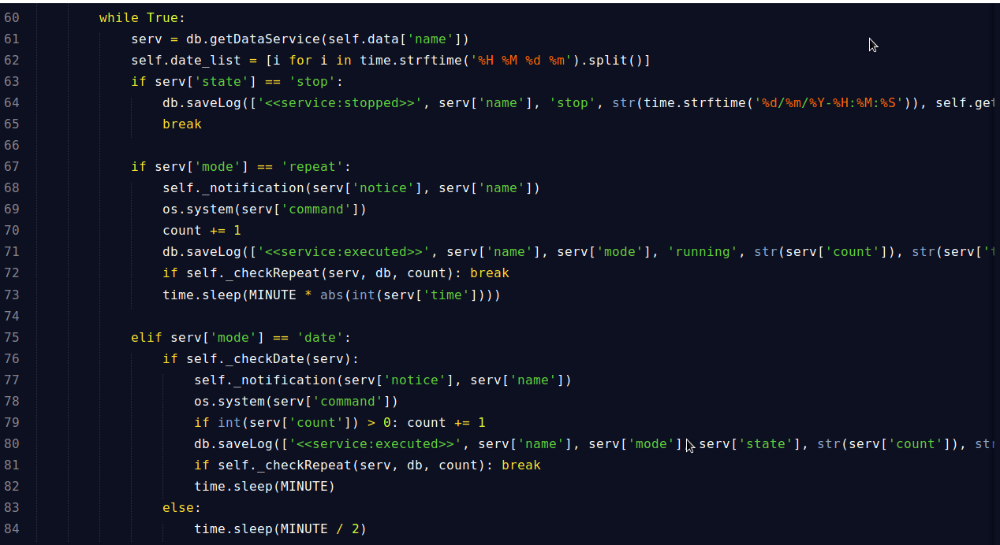